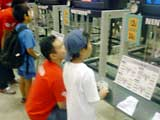
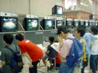

| #4 NINTENDO64体験コーナー（任天堂） |
NINTENDO64体験コーナー（任天堂） page1 ・・・ page2 |
| ●ミッキーのスピードウェイUSA 12月発売予定 |
| ディズニーキャラクター大集合のカートレースゲームです。いろいろなアイテムをつかった駆け引きが、レースをさらに盛り上げてくれます。 ミッキーのファンでしょうか？ 小さな女の子もプレーしていましたよ。 プレーしていた人の話では、「コースがユニークでおもしろい」、というコメントが多かったですね。「隠しキャラクター、期待しています」という方もいました。 |
| ●どうぶつの森（仮称） 2001年2月発売予定 |
|  不思議な森のなかで、動物たちとのふれあいが楽しめるほのぼのとしたゲームです。ゲーム中の時計をセットすることで、現実の時間と同じ流れで進んでいくシステムも面白そうですね。体験コーナーでは1台ごとに日付や時間を変えてあって、いろんな季節が楽しめるようになっていました。 ファミコン時代の懐かしいゲームもいろいろと入っているみたいで、「それだけで買いでしょう！」という声も聞かれました。 |
| ●カスタムロボV2 11月発売予定 |
| 自分で設計したロボットを操り、ゲームのなかのライバルや友達の作ったロボットと戦うロボットアクションRPGの続編。体験コーナーは一人で遊べるシナリオモード、1対1のVSバトル、2対2で戦う2on2バトルと、3つのコーナーに分かれていました。どのコーナーも人でいっぱいでしたが、VSバトルは特に大人気で、体験プレーとはいえ、負けた人はちょっと悔しそうでしたね。以下は、いただいたコメントの一部です。 「ちょっと難しかったけど面白かった（シナリオモード）」「アイテムが増えてうれしいです」「友達に勝つと気持ちいい（VSモード）」。 |
| ●動物番長（仮称） 2001年1月発売予定 |
| 積み木のようなキャラクターの形、"喰う"という独特の操作、などなど、斬新さがウリのアクションゲームです。失われた野生を取り戻すため、走って狩って喰う！ そして、より強い動物へと進化し、動物の頂点、すなわち番長をめざしましょう。 今までにないシステムに最初は少しとまどった人もいたようですが、遊んでくれた人はみんな一様に「おもしろかった」と言ってくれました。特に、コミカルなキャラクターの動きが小さい子にウケてましたね。 |
| ●エコーデルタ（仮称） 12月発売予定 |
|  制限時間は18分!? 繰り返しプレーできる、今までにないシミュレーションゲームです。 プレイヤーは特殊な潜水艦に乗り込み、海底の探査、資源の採掘、潜水艦の強化……、と、限られた短い時間のなかで知恵をしぼり、最終的に遭難船を救助することが目的。登場するマップも、そこでの戦略もまさに無限！ 何度でも飽きずにプレーできるゲームのようです。さすがに、10分間の体験プレーでクリアーできた人はいないと思いますけど…。 |
NINTENDO64体験コーナー（任天堂） page1 ・・・ page2 |
|
|